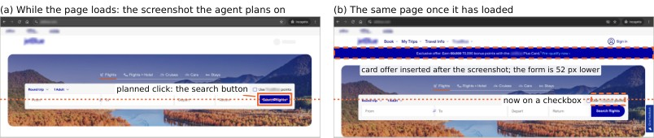

Preflight Bench · 论文 · 研究原型
Preflight在点击前查目标是否移动，失败后重新看屏幕规划
2026-10-29T03:33:26Z · · 采集 10-31 08:09Z

Vasundra Srinivasan论文原图；研究系统与作者实验，不是独立测试。 ↗ 原始图证正确计划也会点错位置
电脑代理先看截图、推理几秒，再按坐标点击。若页面在这段时间插入横幅，原来正确的坐标也可能落到另一个控件。论文用航空公司主页的作者截图说明：搜索表单下移五十二像素后，原搜索按钮的位置变成了积分选项。Preflight把检查插到动作前面，先确认目标是否仍在原位置、有无弹窗遮挡，再决定继续还是重新规划。这里检查的是当前画面与已有计划是否相符，不是重新替用户决定订什么，也不能保证原计划理解了用户意图。论文于十月二十九日提交，配套仓库提供复现材料；这是作者独立研究，未获被比较厂商背书。
位置检查与结果判断分开
检查器先保留间隔二百毫秒的两张截图，排除闪烁光标、加载动画等本来就在变的像素，再到新画面附近寻找目标图块，并检查遮挡与弹窗。作者报告整个像素检查约三百一十二毫秒，其中包含两次截图的间隔。若检查失败，输出是重新规划，而不是把坐标简单挪到看似相同的按钮。另一种问题是动作后页面究竟显示成功还是失败，这需要读取语义；论文把小视觉语言模型或OCR放在该环节。位置和结果不应混成一个“再问大模型看看”的步骤，因为它们需要不同证据，也有不同延迟和误报成本。
公开页面与合成压力测试
作者在三十一张允许只读自动访问的公开页面上跟踪可见按钮和链接，每个状态约一千三百个目标；页面已加载时，三十秒内过期目标比例为百分之零点四，新打开首秒达到百分之十七。为了让检查器遇到足够多的变化，另造六类动态页面，产生四千六百零八对点击样本与三千六百对动作结果样本。保留测试中，像素法检出百分之八十二过期目标、误报百分之四；Opus对应为八十三与十二。4B模型在该动作结果集上检出全部失败且没有误报，但作者承认失败集较容易。上述数字是作者测试条件下的分类表现，不能当全网代理成功率。
多等一下仍不能保证页面稳定
论文另分析HTTP Archive的十月桌面主页记录：六十五个购物或预订页面中，只有百分之十五在HTML解析后三秒内达到网络安静；这个证据是加载与布局变化，不是实际结账误点率。手机页面没有保持同样差距，登录与购物车后的页面也未覆盖。作者只重新实现十种代理的等待规则，没有端到端运行这些代理。实时合成循环中，像素检查减少误点，但按预登记的每次重规划六点五秒计费，单步耗时增加百分之二十八至一百零五，未达到原定开销目标；改用实测规划时长才出现节省。采用者需要检查自己的页面与动作代价，不能只拿“八倍更快”的单检查对比推算整个代理收益。
← 回到项目，继续翻页